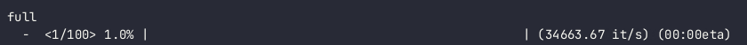
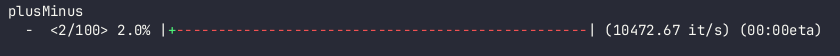
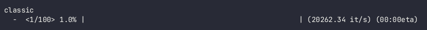
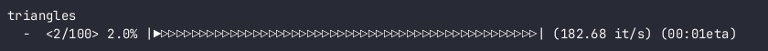
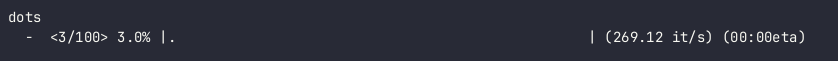
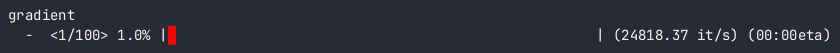
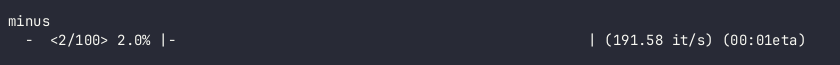
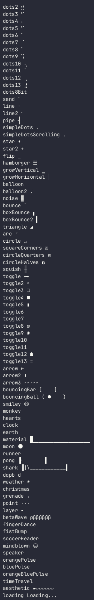
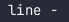
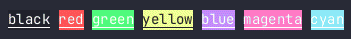

Welcome to fancybar’s documentation!¶
Indices and tables¶
fancybar is a highly customizable terminal progress bar library.
Usage is very simple:
import fancybar
for i in fancybar.bar(range(100)):
# Do something
You can also create a bar without an iterable:
import fancybar
bar = fancybar.ProgressBar(100)
with bar:
# Do something
Installation¶
Pip¶
python3 -m pip install fancybar
Git¶
git clone https://github.com/jenca-adam/fancybar
cd build
python3 setup.py install
Bar Types¶
Please note that not all bar types will work on all terminals!
Bar type showcases can be seen in the gif file at the top of this page.
You can select a bar type using the bartype argument of ProgressBar
There are currently the following bar types:
full
This bar type uses character ‘ ‘ (U+0020 SPACE) and filler ‘ ‘ (U+0020 SPACE) with default character background color “white”. Your terminal must have the ability to output colored text for this bar type to properly render.
plusMinus
This bar type uses character ‘+’ (U+002B PLUS SIGN) and filler ‘-’ (U+002D HYPHEN-MINUS) with default character foreground color “green” and default filler foreground color “red”. Your terminal must have the ability to output colored text for this bar type to properly render.
classic
This bar type uses character ‘#’ (U+0023 NUMBER SIGN) and filler ‘ ‘ (U+0020 SPACE). This bar type should work on any terminal.
triangles
This bar type uses character ‘▶’ (U+25B6 BLACK RIGHT-POINTING TRIANGLE) and filler ‘▷’ (U+25B7 WHITE RIGHT-POINTING TRIANGLE). Your terminal must have the ability to display Unicode characters for this bar type to properly render.
dots
This bar type uses character ‘.’ (U+002E FULL STOP) and filler ‘ ‘ (U+0020 SPACE). This bar type should work on any terminal.
gradient
THIS BAR DOES NOT SHARE THE ARGUMENTS WITH THE OTHER BARS.
This bar type uses character ‘▌’ (U+258C LEFT HALF BLOCK). The background and foreground colors are shifting in a gradient specified by the arguments
start_color(default “red”) andend_color(default “green”) ofProgressBar. Your terminal must have the ability to display Truecolor 24-bit colors (e.g. xterm and its derivatives, KDE Konsole, KDE Yakuake) and to display Unicode characters for this bar type to properly render.minus
This bar type uses character ‘-’ (U+002D HYPHEN-MINUS) and filler ‘ ‘ (U+0020 SPACE)
Arguments¶
General Arguments¶
All bar types (except gradient and including custom bar types ) can be customized using a set of keyword-only arguments given to ProgressBar. See Entry Points
These arguments are:
char_bg_colorSpecifies the background color of the filled part of the progressbar. See Colors for more information about specifying colors.char_fg_colorSpecifies the color of the characters in the filled part of the progressbar. See Colors for more information about specifying colors.filler_bg_colorSpecifies the background color of the empty part of the progressbar. See Colors for more information about specifying colors.filler_fg_colorSpecifies the color of the characters in the empty part of the progressbar. See Colors for more information about specifying colors.
All of these arguments default to None.
Gradient type¶
Gradient bar type has different arguments:
start_colorSpecifies the starting color of the bar’s gradient. Defaults to"red"end_colorSpecifies the ending color of the bar’s gradient. Defaults to"green"
These are set the same way as
Creating custom bar types¶
If the built-in bar types are not enough for your needs, you can easily create custom ones using create_bar_type() function.
Its arguments are:
charCharacter to be used in the filled part of the progressbar.(required)fillerCharacter to be used in the empty part of the progressbar.(required)name__qualname__of the returned class. (defaults to “?”)char_bg_colorSee Arguments (defaults toNone)char_fg_colorSee Arguments (defaults toNone)filler_bg_colorSee Arguments (defaults toNone)filler_fg_colorSee Arguments (defaults toNone)
Spinners¶
Credit for all spinners except “loading” goes to Sindre Sorhus
“loading” spinner is made by me.
All spinners are on the GIF above.
The spinners not shown are not shown because of the asciinema charset limitations. To get a more acute representation of the spinners, clone the repository and run python3 showcases/spinner_test.py.
The default spinner is .
You can choose a spinner by setting the argument spinner of ProgressBar to its name. See Entry Points
Changing spinner speed¶
If you don’t like the animation speed on your spinner, you can change its speed using the argument spinner_speed of ProgressBar.
spinner_speed is the speed of the spinner on the progress bar in revolutions per iteration. Default is 0.5.
Entry Points¶
ProgressBar¶
Main entry point of the fancybar library is the ProgressBar class.
Its __init__ function has the following arguments:
items(int): Required. The number of items the progress bar is running on.length(int): How much space will the progressbar take on screen. Defaults to50item_name(str): What abbreviation to use for items in the items/second part of the progress bar. Defaults to"it"spinner(str): The name of the spinner. See Spinners. Default"line"spinner_speed(floatorint): The spinner’s speed. See Spinners. Default0.5.percentage_bg_color(strortupleorNone): What color is to be used for the background color of the percentage part of the progress bar. See Colors. DefaultNonepercentage_fg_color(strortupleorNone): What color is to be used for the foreground color of the percentage part of the progress bar. See Colors. DefaultNonespinner_bg_color(strortupleorNone): What color is to be used for the background color of the spinner part of the progress bar. See Colors. DefaultNonespinner_fg_color(strortupleorNone): What color is to be used for the foreground color of the spinner part of the progress bar. See Colors. DefaultNone.bartype(strortype): Bar type for the progress bar. See Bar Types. Default"full".hide_cursor(bool): Whether or not is the cursor to be hidden during the progress bar’s runtime. DefaultFalse
All arguments after items are not required and keyword-only
SequentialProgressBar¶
SequentialProgressBar is a subclass of ProgressBar that creates progress bars from an iterable sequence. len() must be callable upon those sequences.
SequentialProgressbar replaces ProgressBar’s items argument by a seq argument – the sequence you want to create progress bars from. All other arguments are unchanged.
bar is an alias for SequentialProgressBar, as it is more likely to be used than ProgressBar
Colors¶
Colors can be specified by either a color string or a RGB tuple. RGB tuples only work on Truecolor terminals.
Color Strings¶
All Terminals¶
These colors should work on all terminals that support colored output
256-color¶
These colors work on 256-color type terminals. The ones that are not in All Terminals might display differently/incorrectly in other terminals.
{kind=link}
RGB Tuples¶
RGB tuples must be in format 0-255 and must not contain alpha part. RGB tuples are only supported in Truecolor terminals. They might display differently/incorrectly in other terminals.
Runtime attributes¶
While your bar is running, you can easily access some of its attributes:
ProgressBar.eta- current ETA in secondsProgressBar.percentage- current percentageProgressBar.items_done- number of items already done